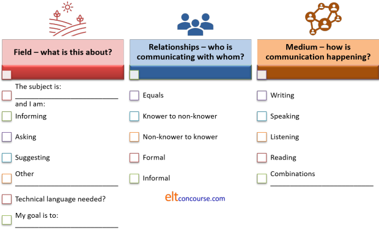
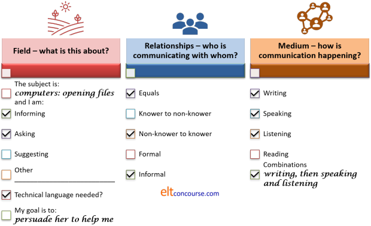

Teaching language skills: the essentials

The is an essential guide. At the end, there are links to
specific guides to teaching particular skills: listening, reading,
writing and speaking.
Here, we are concerned with the kinds of overall approaches which it
is possible to take when teaching language skills.
(In what follows, incidentally, the term text is
used to refer to any piece of language above the level of a
sentence, whether it is read, heard, written or spoken.)
 |
Why teach skills at all? |
This is a deceptively good question.
Language skills are not like bricklaying or pottery which are skills
to be acquired by imitation, instruction and practice because in
most cases, unless we are teaching young children, we can assume
that our learners are already able in their own first language(s) to listen for gist, to read for
specific information, to talk to people to get things done or oil
social wheels and write both formally and informally for a variety
of reasons.
Most people, however, can't build a straight wall or make a teapot
so the skill of doing so has to be taught if they have ambitions to
be able to.
None of those sorts of assumptions can be made about learning
pronunciation, lexis and structure because we know that these are
not abilities that our learners already have. That is why they
are in our classrooms in the first place.
If it is true that nearly all learners are literate in their own
languages, able to extract data from the written word and able to
put their thoughts in writing as well as being able to hold down and
carry on a conversation and listen to and watch a news story on the
television, all that arguable needs to happen is that they apply the
skills they already have to working with texts in English.
All that requires, the theory goes, is the transfer of strategies
and tactics from first-language use to subsequent-language
acquisition and learning.
So, logically, we do not need to teach skills, we need simply to give
learners the opportunity to use knowledge of English lexis,
phonology and grammar to understand and produce various kinds of
texts.
There is, naturally, another school of thought that rejects this view. People in that camp will argue that:
- Skills in accessing and producing texts are not automatically transferred from first-language use to second-language learning so people have to be explicitly taught to apply them in English.
- All languages have unique aspects of generic, structural and phonological phenomena which make the simple transfer of skills impossible without explicit instruction.
- Skills and language knowledge are not separable. Part of knowing, for example, how to speak politely, how to write assertively, how to listen intensively and how to read efficiently is knowing how to apply formal knowledge of the language systems in the handling of texts. That is a language-specific skill and not a generic skill that all learners already possess.
There is no attempt here to take sides in this argument but what follows assumes that you have at least one foot in the second camp and can see a rational need to focus some of your teaching on skills rather than on systems.
Four connected skills |
The usual way of classifying skills is like this:

and that is neat and memorable but flawed for two reasons.
Firstly, it hides the interconnected nature of the skills,
suggesting that they are either receptive
or productive
and independently used.
That is not, in fact, how language is used in the real world, most
of the time.
Only the two written skills (reading and writing) are employed
independently and then not always by any means. The aural /
oral skills (listening and speaking) are almost never deployed
independently of each other, unless one is praying alone or
listening without responding to something like a radio programme, an
announcement or a lecture.
Sometimes the skills are employed simultaneously. For example,
in most natural conversations, we listen and speak not in discrete
sections but virtually simultaneously and we often read while
listening to something else and most children can write a homework
task and watch television or play a video game at the same time.
At other times the skills are employed consecutively. We may,
for example, read an email and then write a response, hear a lecture
and later write up our notes, write a poem and read it aloud, ask a
question and listen to the response, read a newspaper article and
then discuss it with or explain it to another person. We may
read something of interest and summarise it in writing in a
communication of some sort and so on and on.
The second reason that the diagram is flawed is that these four
skills are not by any means the only communicative skills humans
possess. We also have the ability to read another person's
body language and facial expressions and we can communicate our own
thoughts and feelings, sometimes very exactly without recourse to
language at all.
We are able to draw inferences from pictures, the visual layout of
texts, real-life events around us, diagrams, numbers, graphics,
people's clothes, their physical positions, their activities, job
titles and much more.
These are all communicative skills and not trivial ones either but
few have seriously suggested that these skills need to be taught
in the language classroom. That's not the point – there
may be no need to teach such universal (albeit often culturally
determined) skills but that does not mean we shouldn't or can't
exploit them.
Above all, of course, we have the skills of thinking and feeling.
|
Purposes |

Everything happens for a reason and skills are no exception.
We do not just sit down and write. We write to communicate
something if only to ourselves.
We do not just listen. We listen to find something out, to be
entertained, to show sympathy and rapport and for a host of other
reasons.
We do not, unless we are very young or quite eccentric, just speak.
We speak to get things done, to show solidarity, to pass the time of
day or to maintain our relationships and a bunch of other reasons.
We do not simply read. We read something we have selected, or
which has been selected for us, for a purpose. That may be to
learn something or it may be purely for entertainment. It may
even be to practise our English-language reading skills and learn
some new words.
The teaching of skills, therefore, has to begin with the identification of a reason for using the skill. Without that, the endeavour fails before it starts because humans will respond very badly if they respond at all to being asked to use a skill without being given or developing for themselves a reason for using it.
Like the car above, real texts are not designed as vehicles for presenting
language (although that is too often how they are used) but
phenomena in themselves which have purposes and are produced for
reasons which are, if not transparent, discernible with some
thought.
You know why this guide has been written and you know why you are
reading it. Those purposes may not, by the way, be the same
ones as the author intended because we all bring our own needs and
desires to what we do.
|
Consequences |

Purposes have consequences.
Why we speak, listen, read or write will determine
how we listen, speak, read or write.
Examples may help.
- Example 1: listening for a purpose
- If I am listening to find out which platform my train leaves
from, I will listen very differently from the way I listen to my
friend's story about how she lost her boyfriend.
In the first case, I simply monitor until I hear my destination and then I listen very hard indeed to get the vital piece of information I want. I will dismiss anything else I hear and simply switch off. I will listen in silence and try to cut out extraneous noises.
In the second case, I will listen quite carefully because I know I am expected to provide some sort of ongoing feedback along the lines of:
Oh dear
or whatever. I also know that I will be expected to have understood all the important facts because there will be a test later to see how much I can remember when I am asked for a reaction. I will provide one, of course, because I know that's expected and both I and my friend may listen and speak simultaneously. - Example 2: speaking for a purpose

- If I am sitting in a café with a friend, I will have few
plans, probably, for how the conversation may develop. I
may comment on what we see around us, on family matters, the
government, the state of the football season, our mutual friends
and a host of other matters. I know, too, that my friend
may do the same and neither of us has come with an agenda.
The conversation will wander but each turn will be taken up in
some way by the next speaker because that's how conversations
carry on and fill the time. Unless we are meeting for a
prearranged discussion about something, neither of us knows
where the conversation will go. We will also be
unconcerned by non-sequitur comments and irrelevant details.
If I am participating in a seminar in a university, I will speak very differently, possibly using a different accent or dialect. I will be careful what I say because I know others are judging how rational, insightful and reasonable my points are and I'll try to avoid irrelevance or following red herrings. I will also be careful to use grammatically accurate language and specific, perhaps technical, lexis. - Example 3: reading for a purpose
- If I have just taken delivery of a new washing machine, I
know it will come with a set of instructions which will often be
badly translated into my language from the language spoken where
it was made. I will read these as carefully as patience
allows before I plug it in and trust my new shirts to it.
In other words, I'll read intensively until I think I've got the
essentials and then skim read the rest so I know where to find
things for the future.
If, on the other hand, I am looking casually at a notice board in my workplace or school, I will probably just skim my eyes over the heading of each notice until I light on something that interests me. In other words, I'll skim read until I stop and read intensively. - Example 4: writing for a purpose

- If I am writing an email responding to my friend's note
about her holiday dates and troubles at work, I'll write very
differently from how I would write a proposal for a new product
to my bosses.
In the first place, I'll write casually, with little planning and feel free to include all kinds of irrelevance such as telling him about my problems and plans for a holiday. I may even hardly respond to the contents of his email except in passing.
In the second case, I will write carefully to make sure I am being clear and accurate in my use of English. I'll also probably write, read, re-write and re-read a number of times before I am satisfied that I have made my case as logically, briefly and yet informatively as possible. I may start by just jotting down a few notes and then expand them when I get going on a computer. I may even ask a colleague to read what I have written or read what I have written aloud to her to get some feedback which I will incorporate in the next draft. All this will take a considerable amount of time.
|
In the classroom |

And even consequences have consequences.
Before we can begin to consider teaching or practising a skill or
any of its subskills we have to give the matter a little thought.
The following are unhelpful to the point of being actually damaging
to the process:
- Listen to this (plays audio / video clip)
- Please read this text (hands out texts)
- Speak to your partner about what you think is important
- Write 200 words using the new language you learned today
Why?
Click here when you have an answer.
- Because I don't know why I'm listening, I don't know what it will be about, I don't know what I can get from it so I don't know how to listen. I will do it because you are the teacher but I will gain virtually nothing from it.
- Because I didn't choose this text, I don't know what it's about, I don't know why I'm reading it and I can't bring my knowledge of the world into play because I have no time to think.
- Because I don't know what my partner knows already, I don't know what she will do with any information I give, I don't know what she wants to say and I don't have any time to get my thoughts in order.
- I don't know what to write about, I don't know who the audience for the writing will be, I don't know how formal or informal to be and I don't, above all, have a reason for doing this other than to cooperate with my nice teacher.
That wasn't a terribly difficult little test but the moral is
clear.
Skills, as much, if not more, than language systems teaching has
to be set in a clear context. Learners need to know:
- The type of texts they are dealing with.
- What happened to stimulate the production or the comprehension of language
- Why they are using the skill
- Which subskills are appropriate
- What the outcomes of the practice will be
- Who is involved and what their roles and relationships are
- What is in it for them
If we don't provide that information somehow (see below), the time will be wasted and possibly counterproductively used.
|
|
Categorising information |
Now we know what our learners need to know before they are exposed to or asked to produce text of any kind, we need a way to categorise the information we give them. The following will work as a handy aide memoire for planning purposes:

In real life, of course, whenever we speak, listen, read or
write, we are already (sub)consciously aware of the field in which
the text is set, the relationships between ourselves and whoever is
writing or speaking, listening to or reading what we produce (the
tenor) and we know how communication is happening (the mode).
Put all that together and we have what is called the Context
of Situation: what people need to know.
In classrooms, however, that information is not always obvious and
needs to be made explicit.
One way to do this is to produce a simple questionnaire for skills
activities along the lines of:

Not all these categories will be appropriate for all skills
lessons but most of them will. Do not assume that your
learners know what they are doing.
A form like this will take about three minutes to complete (and
people get even quicker with practice). If the time is used to
make sure that people know what they are doing, why they are doing
it and with whom, it will be time well spent.
You can, of course, do this as a whole-class exercise (which may be
wise the first time) but it is more effective in raising awareness
if it is done individually or in the pairs or groups that people
will be working in.
Here's an example of the form filled in for someone completing the following task:
| I am having lots of trouble opening
some kinds of files on my computer because I am working from
home this week. Luckily, a friend of mine works in the IT department of my company so I am writing an email to her to get some advice. I am going to:
|

Now, the learners are alert to the skills needed for the task and
what to do in terms of language functions.
They know that they will have to learn and/or use some technical
language for the email and the conversation but that will be
simplified by writing it first and listening and speaking about it
second. The learners will, in fact, be primed to learn the
language they need because this is a simulated real-world task.
That makes learning the lexis more effective because they can see
what they are learning it for and how they will have to use it.
They know, too, that they are contacting a friend so the email
doesn't need to be formal and nor does the speaking phase.
With luck, that will help to get the tone and content of what is
written correct and prepare for a speaking phase to follow.
This also means, of course, that you are more aware of what needs
teaching and the learners of what needs learning. That helps
you all along the way considerably.
| Related guides concern understanding and teaching the skills independently |
| Understanding reading skills |
| Teaching reading skills |
| Understanding speaking skills |
| Teaching speaking skills |
| Understanding writing skills |
| Teaching writing skills |
| Understanding listening skills |
| Teaching listening skills |
| Indexes: |
| Initial plus skills index |
| Initial plus teaching index |
| In-service skills index |
| In-service teaching index |